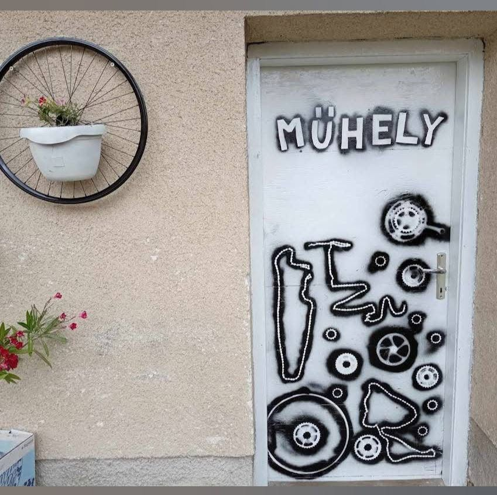
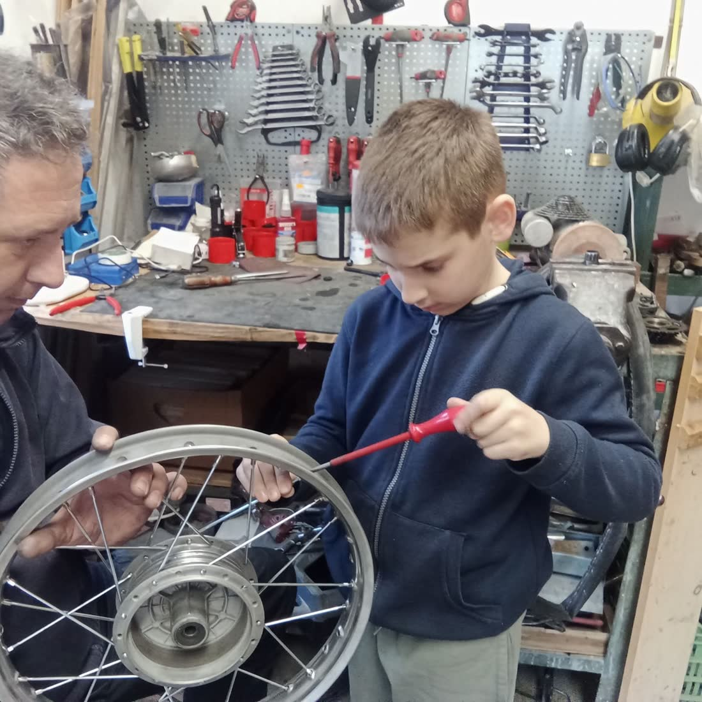

BRINGÁ ZOL¿ — kerékpárszerviz és kerékpárműhely Abdán, Győr mellett
Amit
megcsinálunk — kerékpárszerviz szolgáltatások és árak
Munkadíj árak, alkatrész nélkül. A pontos összeg a bringa állapotán múlik — hívj, és megmondjuk előre, mibe fáj.
-
01
Külső, belső csere
Kerekenként
1 500 Ft -
02
Agy zsírzás, tengelycsere
Kerekenként
2 000 Ft -
03
Centrírozás
Kerekenként
1 800 Ft -
04
Kerékfűzés
Kerekenként
7 000 Ft -
05
V-fék beállítás
Kerekenként
850 Ft -
06
Fékbetét, bowden csere
Kerekenként
1 500 Ft -
07
Olajos fék légtelenítés, olajcsere
Fékenként
2 500 Ft -
08
Kosár, pálcás sárvédő felszerelés
Darabonként
1 000 Ft -
09
Váltó beállítás
Darabonként
500 Ft -
10
Hajtómű javítás, csapágy- vagy monoblokk csere
2 200 Ft -
11
Lánccsere
900 Ft -
12
Általános karbantartás
Kerékcsapágyak zsírzása, fék- és váltóbeállítás, lánckenés
8 000 Ft -
13
Teljes karbantartás
Kerék- és kormánycsapágyak, hajtótengely zsírzása, fék- és váltóbeállítás, lánc olajozás, gumivizsgálat, légnyomás-ellenőrzés
15 000 Ft -
14
Elektromos kerékpár és roller defektjavítás
Minden kerékre
2 500 Ft -
15
Koszos kerékpár takarítás
1 000 Ft

Bécsi utca 128 — AbdaNem gyár.
Műhely. — a Bringázol¿ kerékpárműhely Abdán
Egy festett ajtó, egy fal tele szerszámmal, és valaki, aki tényleg felveszi a telefont. Nálunk nem sorszámot húzol — elmondod, mi a baja, és megnézzük együtt.
A Facebookon videózunk is, mert a bringaszerelés jobban megy, ha közben nevetsz egyet. De ami a satuba kerül, azt komolyan vesszük.
- → Előre megmondjuk az árat
- → Nem cserélünk feleslegesen alkatrészt
- → Csak azt szereljük meg, ami tényleg elromlott
Ami épp
a kertben áll — eladó felújított használt kerékpárok
Ezek a bringák most nálunk vannak. Ha megtetszik valamelyik, hívj — elmondjuk az árát és megbeszéljük, mikor tudod megnézni.
Hívás: (30) 364 0141Készlet betöltése…
Nem találod, amit keresel?
Hívj minket„Rövid idő alatt, kedvező áron, három kerékpárt újított fel nekünk Zoli. Mindegyikkel nagyon elégedettek vagyunk, csak ajánlani tudom!”
Hettinger Ákos — Google-értékelés ★★★★★